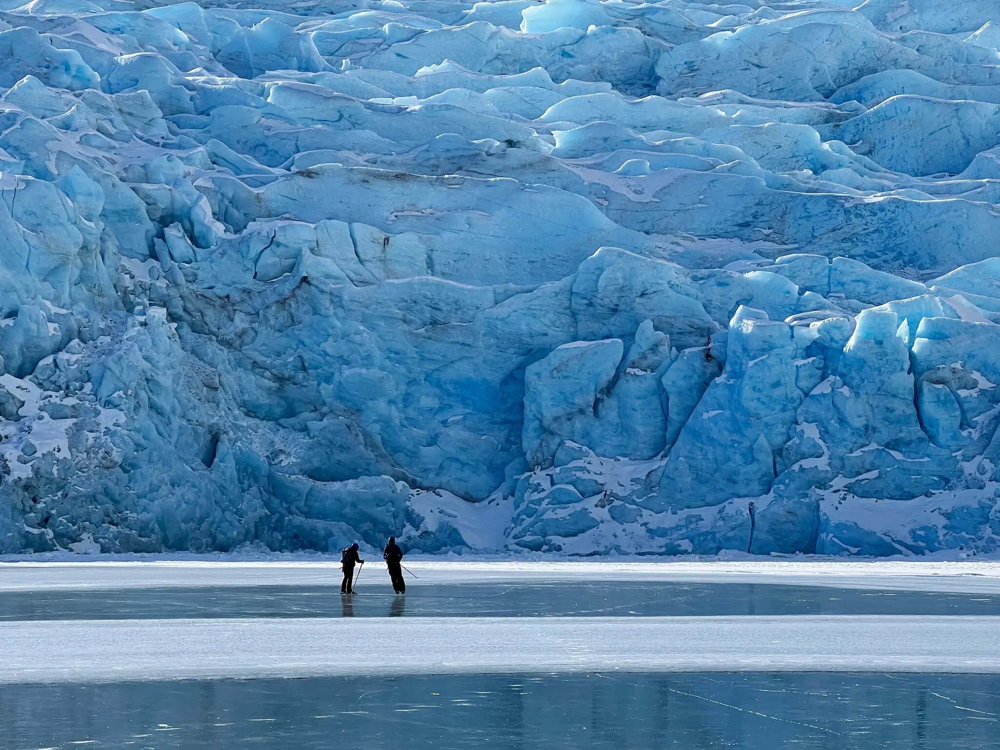

I’d been waiting for months when I finally got the call from Alaska last March: Wild ice was on.
A roughly two-week high-pressure window of cold and clear weather had frozen Portage Lake, the terminus of Portage Glacier, some 50 miles southeast of Anchorage, and it was solid enough to skate on its wild — or natural — ice.
“Skating A-grade ice under a glacier really is a ‘take off work now and just go to it’ type of treat, even for us Alaskans,” said Paxson Woelber, who owns the Anchorage-based skate manufacturer Ermine Skate.
A few months earlier, I had purchased a pair of Ermine Nordic skates, long blades similar to speed skates that affix to the bindings of cross-country ski boots. The compatibility allows skiers to get to remote ice, then switch into blades to skate without changing boots and, as Mr. Woelber put it, “get you off the rink.”
“That’s why it’s so magical: It’s fleeting.
- Laura Kottlowski, a former competitive figure skater based in Golden, Colo.
While figure and hockey skates are designed for maneuverability, including directional changes and tight turns, Nordic skates are designed for distance. The longer, faster blades require less effort to propel, and their stability makes them more tolerant of natural conditions like bumpy or weedy ice.
This story has been reproduced as part of coursework for the Philip Merrill College of Journalism at the University of Maryland. It was originally published on the New York Times.